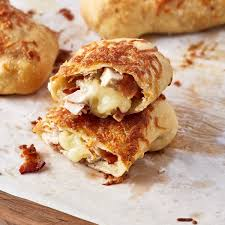

Chicken Bake

Description:
The Costco Chicken Bake is a hot, savory snack known for its crispy, golden-brown exterior and indulgent filling.
Wrapped in pizza dough, it's stuffed with tender, diced chicken, smoky bacon, melted mozzarella cheese,
and creamy Caesar dressing. Baked to perfection, the outside is brushed with an egg wash and sprinkled with parmesan,
giving it a flavorful crust that contrasts with the gooey, cheesy interior. Each bite delivers a satisfying combination
of rich, savory flavors and textures, making it a popular grab-and-go meal at Costco's food court.
Ingredients:
- 2 cups cooked chicken breast, diced (or shredded rotisserie chicken)
- 4 strips bacon, cooked and crumbled
- 1 ½ cups mozzarella cheese, shredded
- ½ cup parmesan cheese, grated
- ½ cup Caesar dressing (or ranch dressing)
- ¼ cup green onions, chopped (optional)
- 1 lb pizza dough (store-bought or homemade)
- 1 egg (for egg wash)
- 1 tablespoon water
- Parmesan cheese, grated
- Garlic powder (optional)
Steps:
- Set the oven to 400°F (200°C) and line a baking sheet with parchment paper
- In a large bowl, mix together 2 cups of cooked, diced chicken, 4 crumbled strips of bacon,
1 ½ cups shredded mozzarella cheese, ½ cup grated parmesan, and ½ cup Caesar dressing (or ranch)
- Divide 1 lb of pizza dough into 4-6 equal portions. On a floured surface, roll each portion into a rectangle,
about ¼ inch thick
- Spoon the chicken mixture into the center of each dough rectangle, leaving space around the edges for sealing
- Fold the dough over the filling, creating a long, sealed log. Pinch the edges to secure the filling inside
- Whisk 1 egg with 1 tablespoon of water and brush the tops of each chicken bake with this egg wash
- Sprinkle the top with extra grated parmesan and a bit of garlic powder for added flavor
- Place the chicken bakes on the prepared baking sheet and bake for 15-20 minutes,
or until the dough is golden brown and crispy
- Let the chicken bakes cool slightly before serving, Enjoy them warm